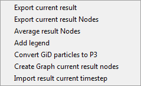
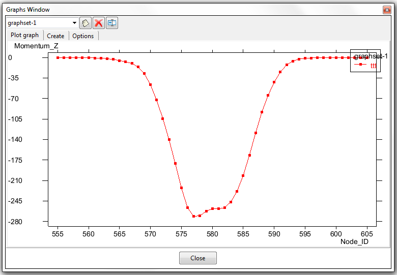

Toolbox for analytics

This option displays post-processing utilities: the list of tools available for the export and manipulation of post-processing results.

Export current result
This option exports, in a plain text format, a chosen component of the result currently selected, for each node in the coarse-graining mesh, for the current timestep. If Time-averaging is active, the export result will be the time-averaged result, rather than the result for a particular timestep.
An example is shown below; both the Export Current Result and Result Exported windows are shown - the latter appears once the Export button has been clicked :

The top lines of the resulting text file read as follows ...
#Analysis : TimeStep #Step : 0.61499999999999999 #Result : Velocity #Type : Vector #Components: |Velocity| 1 0.0032060358207672834 2 0.0097971968352794647 3 0.00053618056699633598 4 0.0041011678986251354 5 0.00039154148544184864 8 6.1994112911634147e-05 9 0.00031072593992576003 10 0.00069418078055605292
The Results Exported window and the contents of the file tell me that this data is for time-step 0.615, concerning the velocity field (which is a vector) and in particular (rather than it's X, Y or Z component) it's modulus.
Export current result Nodes
This is like the previous option, Export Current Result only for a selection of coarse-graining nodes, rather than all the nodes in the mesh. It exports in a plain text format the current result, for a specific selection of nodes, and pairs each result-component with either that Node's ID, or one of its X,Y or Z positional coordinates. In this way a graph can be created when the value of the result-component is mapped against (say) the nodes' IDs.
To select some node click the SelectNodes button and either click on several nodes or drag-select several nodes. Either way, end selection by hitting the ESC key. Now hit the Export button.
An example is shown below; both the Export Current Result Selected Nodes and Result Exported windows are shown - the latter appears once the Export button has been clicked :

Your graph has now been created. Or your plain text file has been created, if you did not opt for Use GiD graph header. Assuming you have a graph, go to the graph manager on the post-processing toolbar and select Update Graphs to get your newly-created graph into your project. Now select Graph Load and pick your new graph - you should see something like the following:

Note there is an advantage here over a graph which slices through the data at (say) a particular Z value. In the slice scenario, when the slice passes between coarse-graining nodes, cutting some edge in the coarse-graining mesh, the value you see in your graph is an interpolated value got from the coarse-graining nodes at either end of the edge - so you introduce an extra level of interpolation. With the method described here, no such extra interpolation is involved - the values come directly from the nodes.
Average result Nodes
This option follows a similar path to the previous option, Export Current Result Nodes, in that having chosen it, the user must select several nodes exactly as described above. Upon exiting node-selection, by hitting the ESC key, Particle-Analytics calculates the average value for the current result-component, over that group of nodes.
The results appear in a pop-up window and consist of:
- Number of nodes selected,
- the average value of the current result-component over those nodes, and
- the standard deviation of the same.
Add legend
Display the Comments window to visualize a legend with the present result. See:
Help > Viz Manual... > GENERAL ASPECTS > Utilities Menu > Tools > Comments > Postprocessing
for more information.
Convert GiD particles to P3
The option here is to write out a Particle-Analytics file containing particle information got from old simulations loaded in the GiD post-process format.

Create Graph current result nodes
This does exactly what Export current result Nodes does, only there is no plain text option - a graph is always what you get. The other difference is that the graph exists in the project without having first to save it to a file.
Import result current timestep
Users who have data from outwith their DEM project (perhaps data from a CFD solution) can pull that data into Particle-Analytics here, to visualize it in the post-processor, or combine it with results from their DEM solution to create new results which are a combination of the two.
Optionally, upon loading, the data can be manipulated as follows ...
- First, (if the
Abs()radio button ison) take it's absolute value. - Next, (if the
Scaleradio button ison) scale the value from the first step using the user-provided scale factor, and - Finally, (if the
Addradio button ison) increment the value from the second step using the user-provided increment.
Using any combination of the above (including none) is valid.